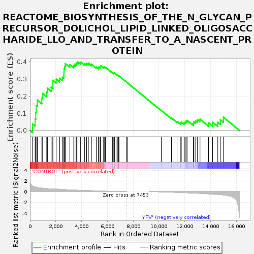
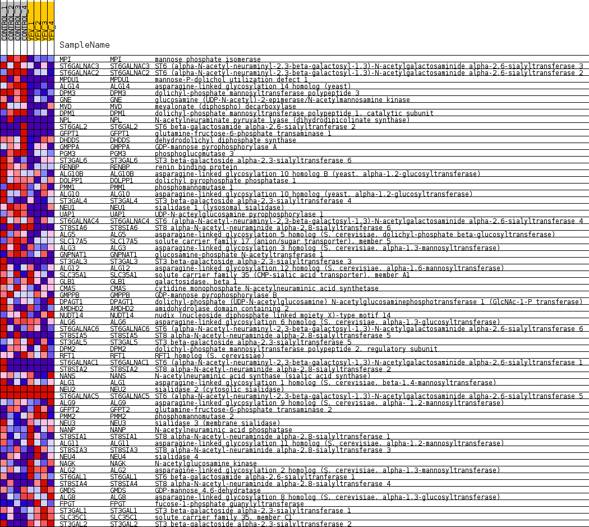
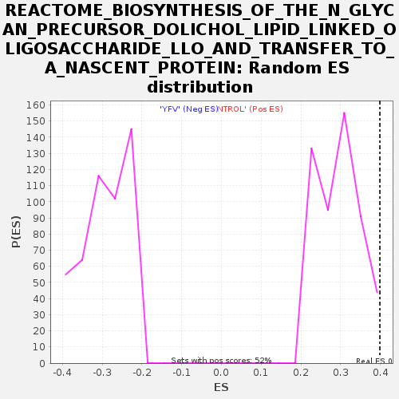

| Dataset | MATRIZ_GSE99081_collapsed_to_symbols.gsea_CLASE_99081.cls#CONTROL_versus_YFV |
| Phenotype | gsea_CLASE_99081.cls#CONTROL_versus_YFV |
| Upregulated in class | CONTROL |
| GeneSet | REACTOME_BIOSYNTHESIS_OF_THE_N_GLYCAN_PRECURSOR_DOLICHOL_LIPID_LINKED_OLIGOSACCHARIDE_LLO_AND_TRANSFER_TO_A_NASCENT_PROTEIN |
| Enrichment Score (ES) | 0.39888072 |
| Normalized Enrichment Score (NES) | 1.3408579 |
| Nominal p-value | 0.027027028 |
| FDR q-value | 1.0 |
| FWER p-Value | 1.0 |

| SYMBOL | TITLE | RANK IN GENE LIST | RANK METRIC SCORE | RUNNING ES | CORE ENRICHMENT | |
|---|---|---|---|---|---|---|
| 1 | MPI | mannose phosphate isomerase | 204 | 1.062 | 0.0382 | Yes |
| 2 | ST6GALNAC3 | ST6 (alpha-N-acetyl-neuraminyl-2,3-beta-galactosyl-1,3)-N-acetylgalactosaminide alpha-2,6-sialyltransferase 3 | 399 | 0.876 | 0.0681 | Yes |
| 3 | ST6GALNAC2 | ST6 (alpha-N-acetyl-neuraminyl-2,3-beta-galactosyl-1,3)-N-acetylgalactosaminide alpha-2,6-sialyltransferase 2 | 452 | 0.854 | 0.1057 | Yes |
| 4 | MPDU1 | mannose-P-dolichol utilization defect 1 | 479 | 0.844 | 0.1445 | Yes |
| 5 | ALG14 | asparagine-linked glycosylation 14 homolog (yeast) | 570 | 0.794 | 0.1770 | Yes |
| 6 | DPM3 | dolichyl-phosphate mannosyltransferase polypeptide 3 | 920 | 0.669 | 0.1874 | Yes |
| 7 | GNE | glucosamine (UDP-N-acetyl)-2-epimerase/N-acetylmannosamine kinase | 975 | 0.650 | 0.2151 | Yes |
| 8 | MVD | mevalonate (diphospho) decarboxylase | 1300 | 0.573 | 0.2225 | Yes |
| 9 | DPM1 | dolichyl-phosphate mannosyltransferase polypeptide 1, catalytic subunit | 1363 | 0.558 | 0.2453 | Yes |
| 10 | NPL | N-acetylneuraminate pyruvate lyase (dihydrodipicolinate synthase) | 1639 | 0.503 | 0.2524 | Yes |
| 11 | ST6GAL2 | ST6 beta-galactosamide alpha-2,6-sialyltranferase 2 | 1776 | 0.500 | 0.2679 | Yes |
| 12 | GFPT1 | glutamine-fructose-6-phosphate transaminase 1 | 1777 | 0.500 | 0.2918 | Yes |
| 13 | DHDDS | dehydrodolichyl diphosphate synthase | 2032 | 0.479 | 0.2991 | Yes |
| 14 | GMPPA | GDP-mannose pyrophosphorylase A | 2296 | 0.441 | 0.3039 | Yes |
| 15 | PGM3 | phosphoglucomutase 3 | 2518 | 0.410 | 0.3098 | Yes |
| 16 | ST3GAL6 | ST3 beta-galactoside alpha-2,3-sialyltransferase 6 | 2627 | 0.393 | 0.3220 | Yes |
| 17 | RENBP | renin binding protein | 2636 | 0.393 | 0.3403 | Yes |
| 18 | ALG10B | asparagine-linked glycosylation 10 homolog B (yeast, alpha-1,2-glucosyltransferase) | 2645 | 0.391 | 0.3585 | Yes |
| 19 | DOLPP1 | dolichyl pyrophosphate phosphatase 1 | 2686 | 0.385 | 0.3745 | Yes |
| 20 | PMM1 | phosphomannomutase 1 | 2741 | 0.376 | 0.3891 | Yes |
| 21 | ALG10 | asparagine-linked glycosylation 10 homolog (yeast, alpha-1,2-glucosyltransferase) | 3092 | 0.333 | 0.3834 | Yes |
| 22 | ST3GAL4 | ST3 beta-galactoside alpha-2,3-sialyltransferase 4 | 3394 | 0.300 | 0.3791 | Yes |
| 23 | NEU1 | sialidase 1 (lysosomal sialidase) | 3491 | 0.290 | 0.3870 | Yes |
| 24 | UAP1 | UDP-N-acteylglucosamine pyrophosphorylase 1 | 3611 | 0.277 | 0.3929 | Yes |
| 25 | ST6GALNAC4 | ST6 (alpha-N-acetyl-neuraminyl-2,3-beta-galactosyl-1,3)-N-acetylgalactosaminide alpha-2,6-sialyltransferase 4 | 3720 | 0.264 | 0.3989 | Yes |
| 26 | ST8SIA6 | ST8 alpha-N-acetyl-neuraminide alpha-2,8-sialyltransferase 6 | 3924 | 0.248 | 0.3982 | No |
| 27 | ALG5 | asparagine-linked glycosylation 5 homolog (S. cerevisiae, dolichyl-phosphate beta-glucosyltransferase) | 4239 | 0.225 | 0.3895 | No |
| 28 | SLC17A5 | solute carrier family 17 (anion/sugar transporter), member 5 | 4392 | 0.212 | 0.3903 | No |
| 29 | ALG3 | asparagine-linked glycosylation 3 homolog (S. cerevisiae, alpha-1,3-mannosyltransferase) | 4526 | 0.200 | 0.3916 | No |
| 30 | GNPNAT1 | glucosamine-phosphate N-acetyltransferase 1 | 4763 | 0.178 | 0.3856 | No |
| 31 | ST3GAL3 | ST3 beta-galactoside alpha-2,3-sialyltransferase 3 | 5139 | 0.144 | 0.3693 | No |
| 32 | ALG12 | asparagine-linked glycosylation 12 homolog (S. cerevisiae, alpha-1,6-mannosyltransferase) | 5313 | 0.129 | 0.3648 | No |
| 33 | SLC35A1 | solute carrier family 35 (CMP-sialic acid transporter), member A1 | 5339 | 0.127 | 0.3693 | No |
| 34 | GLB1 | galactosidase, beta 1 | 5430 | 0.119 | 0.3694 | No |
| 35 | CMAS | cytidine monophosphate N-acetylneuraminic acid synthetase | 5446 | 0.118 | 0.3741 | No |
| 36 | GMPPB | GDP-mannose pyrophosphorylase B | 5479 | 0.115 | 0.3776 | No |
| 37 | DPAGT1 | dolichyl-phosphate (UDP-N-acetylglucosamine) N-acetylglucosaminephosphotransferase 1 (GlcNAc-1-P transferase) | 5707 | 0.098 | 0.3682 | No |
| 38 | AMDHD2 | amidohydrolase domain containing 2 | 5757 | 0.094 | 0.3697 | No |
| 39 | NUDT14 | nudix (nucleoside diphosphate linked moiety X)-type motif 14 | 5845 | 0.088 | 0.3686 | No |
| 40 | ALG6 | asparagine-linked glycosylation 6 homolog (S. cerevisiae, alpha-1,3-glucosyltransferase) | 6404 | 0.045 | 0.3362 | No |
| 41 | ST6GALNAC6 | ST6 (alpha-N-acetyl-neuraminyl-2,3-beta-galactosyl-1,3)-N-acetylgalactosaminide alpha-2,6-sialyltransferase 6 | 6506 | 0.038 | 0.3318 | No |
| 42 | ST8SIA5 | ST8 alpha-N-acetyl-neuraminide alpha-2,8-sialyltransferase 5 | 6509 | 0.038 | 0.3334 | No |
| 43 | ST3GAL5 | ST3 beta-galactoside alpha-2,3-sialyltransferase 5 | 6514 | 0.037 | 0.3350 | No |
| 44 | DPM2 | dolichyl-phosphate mannosyltransferase polypeptide 2, regulatory subunit | 6562 | 0.034 | 0.3337 | No |
| 45 | RFT1 | RFT1 homolog (S. cerevisiae) | 6744 | 0.024 | 0.3236 | No |
| 46 | ST6GALNAC1 | ST6 (alpha-N-acetyl-neuraminyl-2,3-beta-galactosyl-1,3)-N-acetylgalactosaminide alpha-2,6-sialyltransferase 1 | 6813 | 0.020 | 0.3204 | No |
| 47 | ST8SIA2 | ST8 alpha-N-acetyl-neuraminide alpha-2,8-sialyltransferase 2 | 6856 | 0.018 | 0.3187 | No |
| 48 | NANS | N-acetylneuraminic acid synthase (sialic acid synthase) | 6883 | 0.016 | 0.3178 | No |
| 49 | ALG1 | asparagine-linked glycosylation 1 homolog (S. cerevisiae, beta-1,4-mannosyltransferase) | 6904 | 0.015 | 0.3173 | No |
| 50 | NEU2 | sialidase 2 (cytosolic sialidase) | 7486 | 0.000 | 0.2814 | No |
| 51 | ST6GALNAC5 | ST6 (alpha-N-acetyl-neuraminyl-2,3-beta-galactosyl-1,3)-N-acetylgalactosaminide alpha-2,6-sialyltransferase 5 | 7566 | 0.000 | 0.2765 | No |
| 52 | ALG9 | asparagine-linked glycosylation 9 homolog (S. cerevisiae, alpha- 1,2-mannosyltransferase) | 10179 | -0.036 | 0.1167 | No |
| 53 | GFPT2 | glutamine-fructose-6-phosphate transaminase 2 | 10968 | -0.099 | 0.0727 | No |
| 54 | PMM2 | phosphomannomutase 2 | 11400 | -0.139 | 0.0527 | No |
| 55 | NEU3 | sialidase 3 (membrane sialidase) | 11657 | -0.160 | 0.0445 | No |
| 56 | NANP | N-acetylneuraminic acid phosphatase | 11730 | -0.167 | 0.0481 | No |
| 57 | ST8SIA1 | ST8 alpha-N-acetyl-neuraminide alpha-2,8-sialyltransferase 1 | 11947 | -0.188 | 0.0437 | No |
| 58 | ALG11 | asparagine-linked glycosylation 11 homolog (S. cerevisiae, alpha-1,2-mannosyltransferase) | 12017 | -0.195 | 0.0488 | No |
| 59 | ST8SIA3 | ST8 alpha-N-acetyl-neuraminide alpha-2,8-sialyltransferase 3 | 12097 | -0.203 | 0.0536 | No |
| 60 | NEU4 | sialidase 4 | 12177 | -0.211 | 0.0588 | No |
| 61 | NAGK | N-acetylglucosamine kinase | 12665 | -0.261 | 0.0412 | No |
| 62 | ALG2 | asparagine-linked glycosylation 2 homolog (S. cerevisiae, alpha-1,3-mannosyltransferase) | 12710 | -0.266 | 0.0512 | No |
| 63 | ST6GAL1 | ST6 beta-galactosamide alpha-2,6-sialyltranferase 1 | 12850 | -0.282 | 0.0561 | No |
| 64 | ST8SIA4 | ST8 alpha-N-acetyl-neuraminide alpha-2,8-sialyltransferase 4 | 12985 | -0.299 | 0.0621 | No |
| 65 | GMDS | GDP-mannose 4,6-dehydratase | 13181 | -0.325 | 0.0656 | No |
| 66 | ALG8 | asparagine-linked glycosylation 8 homolog (S. cerevisiae, alpha-1,3-glucosyltransferase) | 13841 | -0.416 | 0.0447 | No |
| 67 | FPGT | fucose-1-phosphate guanylyltransferase | 14157 | -0.474 | 0.0479 | No |
| 68 | ST3GAL1 | ST3 beta-galactoside alpha-2,3-sialyltransferase 1 | 14560 | -0.507 | 0.0474 | No |
| 69 | SLC35C1 | solute carrier family 35, member C1 | 14756 | -0.555 | 0.0619 | No |
| 70 | ST3GAL2 | ST3 beta-galactoside alpha-2,3-sialyltransferase 2 | 14995 | -0.623 | 0.0769 | No |

